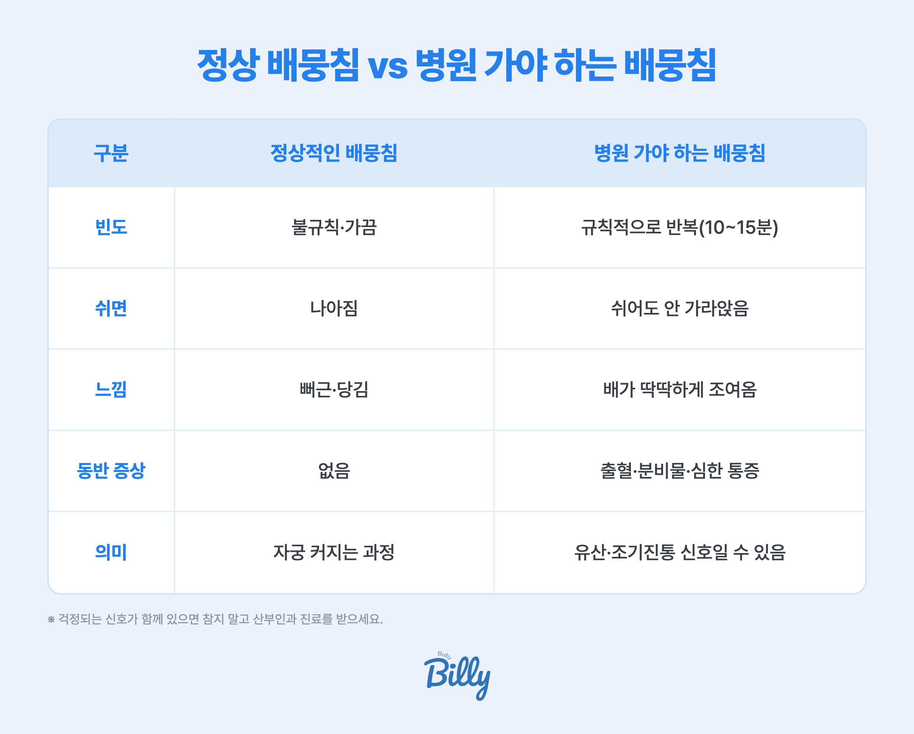

- 임신 초기 배뭉침은 대부분 자궁이 커지며 생기는 정상 과정이에요
- 불규칙하고 쉬면 나아지면 걱정하지 않아도 되는 경우가 많아요
- 단 규칙적으로 반복되거나 출혈·심한 통증을 동반하면 지체 말고 병원에 가세요
임신 초기 배뭉침, 왜 생기나요?
초기에 아랫배가 뭉치거나 당기는 느낌은 자궁이 커지면서 주변 인대와 근육이 늘어나기 때문이에요. 자궁을 지탱하는 둥근인대가 당겨지면 한쪽이 뻐근하거나 콕콕 쑤시기도 해요.
이런 가벼운 당김은 대부분 정상이에요. 오래 서 있거나, 갑자기 자세를 바꾸거나, 방광이 찼을 때 더 느껴질 수 있어요. 잠시 쉬면 가라앉는 게 보통이에요.
정상 배뭉침 vs 병원 가야 하는 배뭉침

| 구분 | 정상적인 배뭉침 | 병원 가야 하는 배뭉침 |
|---|---|---|
| 빈도 | 불규칙·가끔 | 규칙적으로(10~15분 간격) 반복 |
| 쉬면 | 나아짐 | 쉬어도 안 가라앉음 |
| 느낌 | 뻐근·당김 | 배가 딱딱하게 조여옴 |
| 동반 증상 | 없음 | 출혈·분비물·심한 통증 |
| 의미 | 자궁이 커지는 과정 | 유산·조기진통 등 신호일 수 있음 |
배뭉침을 완화하는 법
- 잠시 쉬기 — 편한 자세로 누워 옆으로 눕거나 다리를 올려요
- 수분 충분히 — 탈수 때 더 자주 뭉칠 수 있어요
- 방광 비우기 — 소변이 찼을 때 배뭉침이 심해지기도 해요
- 천천히 움직이기 — 갑자기 일어나거나 자세 바꾸는 걸 피해요
이럴 땐 바로 병원에 가세요
- 배뭉침이 규칙적으로 반복되고 쉬어도 안 가라앉을 때
- 출혈이나 분비물을 동반할 때
- 한쪽 아랫배가 심하게 아플 때 → 자궁외임신 의심
- 심한 어지럼·실신이 함께 있을 때
베이비빌리 베동 커뮤니티 초기 엄마들 사이에서도 "배뭉침·배땡김이 괜찮은지" 묻는 글이 종종 올라와요. 대부분은 정상이지만, 걱정되는 신호가 함께 있으면 참지 말고 진료받는 게 마음도 편해요.
📱 내 주차엔 어떤 게 정상일까? 매일 챙겨드려요
주차마다 몸의 변화도, 챙길 것도 달라져요. 베이비빌리 앱이 내 예정일 기준으로 "이번 주 아기와 내 몸"을 매일 알려드려서, 작은 변화에도 덜 불안하게 도와드려요.
베이비빌리 앱에서 내 주차 보기 →자주 묻는 질문
대부분 자궁이 커지며 생기는 정상적인 당김이에요. 불규칙하고 쉬면 나아지면 걱정하지 않아도 되는 경우가 많아요. 다만 규칙적으로 반복되거나 출혈·심한 통증을 동반하면 병원에 가세요.
정상은 불규칙하고 쉬면 가라앉으며 동반 증상이 없어요. 위험한 배뭉침은 규칙적으로(10~15분 간격) 반복되고, 쉬어도 안 가라앉으며, 출혈·분비물·심한 통증을 동반해요.
가벼운 당김만으로 유산을 뜻하지는 않아요. 다만 심한 아랫배 통증과 출혈이 함께 있으면 유산·자궁외임신 신호일 수 있으니 바로 병원에 가세요.
편한 자세로 잠시 쉬고, 수분을 충분히 마시고, 방광을 비우고, 무리한 활동을 줄이면 대부분 나아져요. 쉬어도 계속되면 진료를 받으세요.
규칙적으로 반복되는 배뭉침, 출혈이나 분비물 동반, 심한 아랫배 통증, 어지럼·실신이 있으면 즉시 병원에 가세요.
함께 보면 좋은 가이드
참고 자료
- 대한산부인과학회, 임신 중 복부 불편감 안내. 대한산부인과학회
- American College of Obstetricians and Gynecologists, Pregnancy Discomforts. ACOG
- 보건복지부 국가건강정보포털, 임신·출산 정보. 국가건강정보포털
※ 본 페이지의 의학 정보는 대한산부인과학회·ACOG·보건복지부 자료와 베이비빌리 베동 커뮤니티를 기반으로 정리한 일반 안내예요. 증상은 개인마다 다르니, 걱정되는 신호가 있으면 산부인과 진료를 받아 주세요. 특정 상품을 권유하지 않습니다.